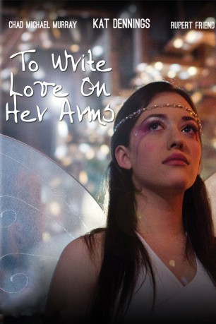

#10045 To Write Love on Her Arms
 
 IMDB-Wertung: 6.6 / 10
IMDB-Wertung: 6.6 / 10  Metascore: 0
Metascore: 0 
Seit ihrer frühesten Kindheit liebt Renee Yohe Märchen: Die Vorstellung von Prinzessinnen, Helden und ewigem Glück, von denen sie immer wieder zu träumen beginnt. Auch später, mit 19 Jahren, geht sie noch auf Gedankenreise. Der Schulflur an sich ist schließlich langweilig – warum nicht eine Musicalszene daraus machen, warum nicht alle Schüler tanzen lassen? Die passende Musik hat Renee doch sowieso in den Ohren. Aber das reale Leben der jungen Frau ist kein fröhliches Musical. Sie hat mit Drogenabhängigkeit, Selbstverletzung und Depression zu kämpfen, Pillen können daran nicht viel ändern. Dann lernt sie David McKenna kennen – der erzählt ihr von einer Einrichtung, in der sie Hilfe bekommen kann…
Jahr: 2012
Dauer: 98 Minuten
FSK: 12
Land: USA Studio: Sony Pictures Home EntertainmentTonspuren: DD2.0 - ,
Untertitel:
Auflösung: 1080p (1920x1080) Größe: 3368 MB
Genre: Drama, Musik, Biographie
Regisseur: Nathan Frankowski
Drehbuch: Kate King Lynch, Nathan Frankowski, Bob Massey, Josh Lujan Loveless, Jamie Tworkowski
Soundtrack: Robbie Bronnimann, Andy Hunter
Darsteller:
 Kat Dennings als Renee Yohe
Kat Dennings als Renee Yohe Chad Michael Murray als Jamie Tworkowski
Chad Michael Murray als Jamie Tworkowski Rupert Friend als David McKenna
Rupert Friend als David McKenna- Mark Saul als Dylan
- Juliana Harkavy als Jessie
- Luis Antonio als Jessie's Father
- Brad Benedict als Beautiful Man
 Rus Blackwell als Conrad Willard
Rus Blackwell als Conrad Willard Corbin Bleu als Mackey
Corbin Bleu als Mackey- Brian Patrick Clarke als Tom Yohe
- Surrah Derleth als Dancer
- Kristi Engelmann als Amanda
 Whitney Goin als Dena Yohe
Whitney Goin als Dena Yohe- L.J. Grillo als Pedestrian
- Isabella Iannuzzi als Young Renee
 Bettina Kenney als
Bettina Kenney als - Michelle LaBret als Nikki
 J. LaRose als Echo
J. LaRose als Echo- Travie McCoy als
 Will Peltz als Sean
Will Peltz als Sean- Lindsey Riesen als Teenage Renee
- Diana Riley als Halloween Party Guest
- Juan Santos als Michael's Father
- Katherine Shepler als April Yohe
- Ylian Alfaro Snyder als Choir Member
- Leander Suleiman als Hippie
- Chelsea Talmadge als Ambrosia
- Chuli Joy als Security Guy (uncredited)
- Krystle McMullan als Student (uncredited)
- Jackie Pitts als Rave dancer (uncredited)
- Drayton Ball als Young Dylan
- Tiffany Banks als Student
- Kaleigh Baugh als Observer
- Samantha Castro als Young Jessie
- Katie Caulfield als Choir Girl
- Sri Charan als Robert
- West DeLarosa als Michael
- Katelyn Douglass als Party Girl
- Bridget Guston als Party girl / Hippie / Pedestrian
- Elgina Hyppolite als Girl
- Ryan Kirkland als Himself
- Christine LaRose als Pin-up Rave Dancer
- Danny Leggett als Homeless Man
- Brianna McCoy als Lacey
- Brandon Migliore als Street Dealer
- Samuel Paul als Grocery Store Clerk / Party Boy / Student
- Susie Quesenberry als Jamie's Intern
- Timothy Quitco als Extra
- Cameron Rhome als Rave Dancer
- Steve Robertson als Label Rep Stevo
Datei: X:\2012(N-Z)\To Write Love on Her Arms (2012, FSK12, 1920x1080).mkv seit 21.11.2018
Festplatte: HD 2012(N-Z)-2013(A-H)
 Es gibt insgesamt 138 Filme in der Gruppe '2012(N-Z)'
Es gibt insgesamt 138 Filme in der Gruppe '2012(N-Z)'